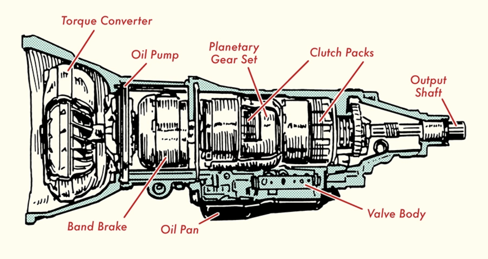
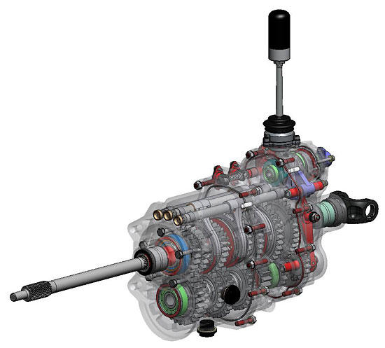
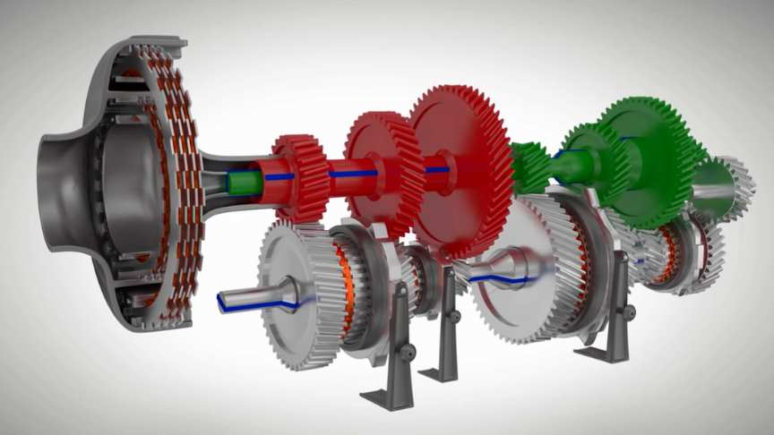

Transmissions
Many types of transmissions are found in cars. The transmissions you will learn about are the manual, automatic, sequential and dual clutch transmissions.




Hover over an image above to see which transmission it is.